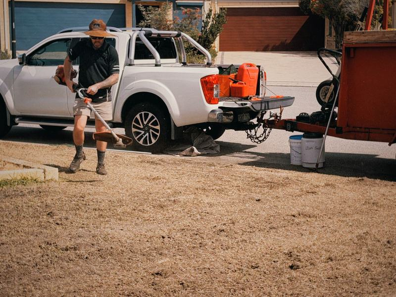

Home › Verti-Mowing
Verti-Mowing & Dethatching in Perth.
Professional verti-mowing and dethatching from $8/m². If your lawn feels spongy underfoot or stays patchy no matter how much you water it, a dead thatch layer is choking it. Vertical blades cut down through that layer and pull it out, so water, air and nutrients reach the roots again.

What Verti-Mowing Actually Does
A verti-mower runs vertical blades down into the lawn instead of across the top, slicing through the built-up layer of dead runners and organic matter sitting between the soil and the green growth. That layer is thatch, and once it gets thick it acts like a mat: water beads off it, fertiliser sits on top of it, and the living grass underneath slowly suffocates. Cutting through it and raking it out is the single biggest reset a tired lawn can get.
Strips out the dead layer
Couch, kikuyu and buffalo all build up thatch as they spread. Left alone it thickens every season until the lawn is mostly dead runners with a thin green top. Vertimowing cuts straight through it.
Gets water and feed to the roots
A thick thatch layer stops water, air and fertiliser ever reaching the soil. Once it is stripped out, everything you put on the lawn actually gets to the roots instead of sitting on a dead mat.
Sets up the whole rejuvenation
Aeration and top dressing both work far better once the thatch is gone, because the soil is actually exposed. Dethatch first, then aerate, then top dress: that's the order for a reason.
Verti-Mowing Pricing
Verti-Mowing / Dethatching
Vertical mowing and dethatching, with the blade depth set for your grass type. Fertiliser and a wetting agent are included as standard on every job. Priced instantly online: measure your lawn, get a number.
Complete Rejuvenation Package
Dethatch + aeration + top dressing + fertiliser and wetting agent + reticulation check, done in one visit. Pick all three core services in the calculator and save 10%.
Rather do it yourself?
We dry-hire the same professional scarifiers and verti-mowers we use on our own jobs, with the depth set for your grass type before you leave.
When To Verti-Mow A Lawn In Perth
Vertimowing season runs from September through to mid-April, while Perth's warm-season lawns are growing strongly. Spring is the sweet spot: the soil is warming up, the lawn is actively growing, and it has the whole season to recover and thicken up before summer heat arrives. Dethatch a dormant winter lawn and you just leave it thin and exposed with none of the recovery.
Recovery time varies with the weather and how healthy the lawn was to start with, but as a rule of thumb, expect to be mowing again within 2 to 3 weeks. Buffalo grass (Sir Walter, Palmetto, Sapphire) needs a shallower cut than couch, since it's a surface-runner that doesn't tolerate being cut right to the soil. Not sure what grass you have? Send a photo with your quote and we'll tell you.
Spongy lawn? We'll tell you straight.
Send your lawn size and a few photos through the online quote and we will price the vertimow instantly. You do not need to be home, and EFTPOS is available on the day.
Get Your Free QuoteVerti-Mowing Services Across Perth
We run verti-mowing and dethatching right across the Perth metropolitan area, with most of our work in the northern corridor.
Verti-Mowing Questions
When's the best time to verti-mow in Perth?
Vertimowing season runs from September through to mid-April, while your lawn is growing strongly through the warmer months. Spring is the sweet spot: the soil is warming up, your lawn is actively growing, and it has the whole season to recover and thicken up before the summer heat arrives.
How long will my lawn take to recover?
It depends on the weather and the health of your lawn, so recovery time will vary. Dethatching is aggressive by design, and that short, scalped look straight after is completely normal. With water and a feed behind it, most lawns come back noticeably thicker and greener. As a rule of thumb, you'll be mowing again within 2-3 weeks.
Is vertimowing safe for buffalo grass?
Yes, but the depth matters. Buffalo (Sir Walter, Palmetto, Sapphire) is a surface-runner and doesn't tolerate being cut right to the soil, so we set the blades shallower than we do for couch, removing the thatch without scalping the runners. Couch handles a much deeper cut and actually responds better to it. Not sure what grass you have? Send a photo with your quote and we'll tell you.
What's the difference between verti-mowing and dethatching?
They're the same job. Verti-mowing (or vertical mowing) is the technique: vertical blades cut down into the lawn instead of across the top. Dethatching is the result: the dead thatch layer they cut through gets pulled out. Perth lawn people use both words for the same service.
How much does verti-mowing cost in Perth?
From $8 per square metre with a $400 minimum job. Fertiliser and a wetting agent are included as standard on every job. Bundle it with aeration and top dressing and you save 10%. The quote calculator gives you an instant price for your lawn size.
Can I do it myself?
Yes. We dry-hire our scarifiers and verti-mowers to homeowners across Perth. See the equipment hire page, or call and we will tell you honestly whether DIY or a booked service makes more sense for your lawn.
Bring your lawn back to life.
Fifteen years renovating Perth lawns. Free quotes, no need to be home, EFTPOS on the day.
Get An Instant QuoteGet a price
Send your details and we will price it. Photos help: text them to 0427 206 246 after you send this. Want numbers right now? Use the full calculator.